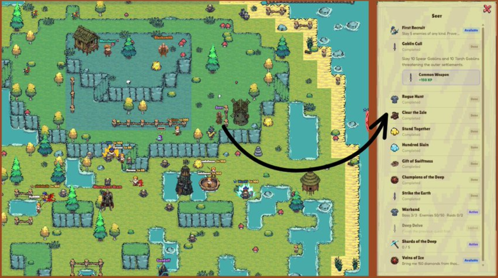
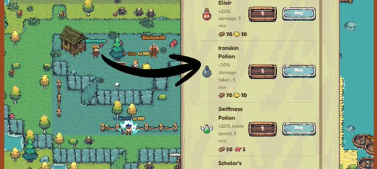
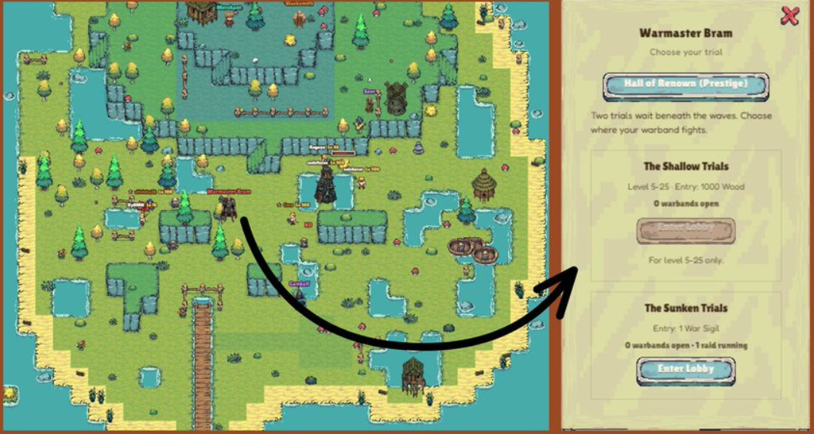
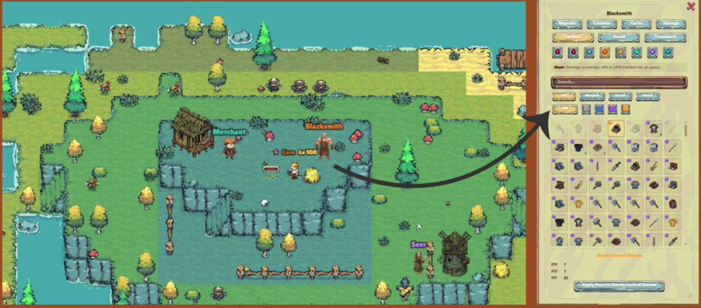

Chat
You can interact here if you have any questions regarding the game. Invite players for a raid or make friends in the game!
Getting started
From reading the map to surviving your first day — this guide walks new players through the interface, core gameplay loops, NPCs and the tricks veteran players wish they knew sooner.
How to play as a beginner.
You can interact here if you have any questions regarding the game. Invite players for a raid or make friends in the game!
For beginners, there are three things to focus on:
Every 25% of EXP earns you 1 stat point.
Recommended
Put your early stat points into Strength for faster grinding. Add Agility or Vitality later once Strength is covered.
There are three Guardian types. Beginners should pick the Monk — it lets you heal while killing mobs.
Shows the pets you own. Level them up with eggs to keep their energy up and gain more stats. Pets can also be fused together.
Buy and sell items here. Selling requires burning 10,000 $ISLANDS, but buying doesn't cost anything to burn.
Recommended
Start with an Epic gear set — it's cheap (around $0.30 for weapon, armor, and shoes) and gets you grinding faster.
Shows your current gear. Equip items from the Inventory tab by clicking them, and unequip by clicking the item on the Equipped tab. Gear can be upgraded at the Blacksmith for additional stats — more on that in the Blacksmith section below.
Shows your resources — meat, gold, wood, runes, and more. It also has a hotkey section for healing yourself, your pet, your guardian, and using potions. Bind these to keys 1–5 based on your preference.
Your guide to the islands, including coordinates.
Owning land gives you more resources while you play, and a share of gold whenever another player hatches an egg on it. Land can also be customized to your preference. See the docs for full details.
The loops that earn you XP, gold, and gear.
Killing enemies grants the XP listed next to their HP. Chopping trees gives 3 XP each, plus wood.
| Drop | Chance |
|---|---|
| Meat | 99.5% |
| Runes | 0.16% |
| Gear | 5% |
| Gold | 0.5% |
Trees drop Wood.
At level 10 you unlock Gold mining from gold nodes. Gold upgrades gear and pets — boosting damage, survivability, and clear speed, which in turn means more XP per hour.
At level 60 you can mine Diamonds from blue nodes. Diamonds are the key to raids, unlocked from level 26 onward.
Find bubbling water spots on the map and interact with them.
If you get lucky and an egg drops from a mob, hatch it here. It costs 100 gold to place an egg in the hatchery, and rewards you with a pet that adds extra stats and affixes — and can fight alongside you for faster grinding.
Try your luck for exclusive skins through the Gacha. Each skin comes with corresponding stats that get added to your character.
Choose between 7 skills based on your playstyle. Check the official docs for full skill details.
The characters that hand out quests, skills, and boosts.
Click the Seer to open your quest tab.
Recommended
Grab these quests first — they give extra EXP and gear at the same time.
Go to Seer → Rogue Hunt → Pick your Skill. Check the Islands docs for full skill details.
Skins are now part of the game. Go to Seer → Daily: Islands Chores to get your costume, then equip it from Equipment Tab → Inventory by clicking the skin.

Sells various potions that temporarily boost your stats.
Recommended
Grab a Swiftness Potion as a beginner — it helps you move around the map much faster.

Offers two raid options:
Recommended
Raids give a lot of EXP. Form a party for a faster clear.

The Blacksmith offers many services, but as a beginner focus on three things first:
Upgrading costs gold and wood, and can boost your gear's stats.
Risk
Upgrading can shatter your weapon and the upgrade can fail. You can protect a weapon from shattering by burning 7,000 $ISLANDS.
Runes dropped by mobs can be enchanted onto weapons, each giving a specific affix boost.
Recommended
If you have runes to spare, prioritize Insight, Slayer, and Sharpness — they help you kill mobs faster and earn more EXP. Remember: each gear piece can only hold 4 affixes (4 runes), so choose wisely.
Once you have better equipment, salvage your old common or rare weapons for EXP.

Small habits that separate a smooth run from a rough one.
Holding $ISLANDS comes with real benefits:
See the official docs for full holding tiers.
Struggling to kill a mob without dying? Dying costs you EXP.
Recommended
Fight near a Guardian Monk or Archer stationed on the islands close to you — they'll heal you even if you don't have your own Guardian deployed.
Danger
The Kraken, Minotaur, and Boar can kill you in one hit if you're not careful. Dying costs you EXP.
Only challenge these mobs once you have a Guardian — specifically a Monk.
If you want to push further into the game, reinvesting your earnings back into upgrading gear and pets goes a long way.